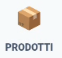
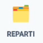
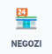
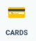
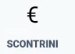
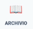

Questa sezione raccoglie tutti gli archivi operativi di LiSA: prodotti, reparti, negozi, carte fedelta, scontrini e archivio personale.

Elenca tutti i prodotti utilizzati almeno una volta in modalita Lista (inclusi gli ingredienti delle ricette). Da qui puoi consultarne l'elenco ed eliminare prodotti indesiderati o aggiunti per errore.

Elenca i reparti usati da LiSA per l'assegnazione (manuale o automatica con IA) dei prodotti. Puoi modificare l'ordine, cambiare la descrizione, aggiungere o rimuovere reparti.

I negozi vengono rilevati in base alla posizione (i piu vicini compaiono per primi). Puoi definire i tuoi preferiti e attribuire a ciascuno la relativa carta fedelta: quando ti trovi in quel negozio, LiSA ti proporra automaticamente la carta giusta.

Registra le tue carte fedelta con il relativo codice. LiSA riconosce il tipo (barcode, QR, ecc.) e la memorizza identica alla carta originale. Usa la funzione Foto per acquisirla direttamente dallo smartphone.

Registra gli scontrini di spesa in qualsiasi momento. LiSA interpreta il contenuto e attribuisce il costo di ogni prodotto (complessivo o per unita di misura, a tua scelta). Permette il confronto rapido delle tariffe nei successivi acquisti.

Contiene le ricette e gli appunti piu interessanti salvati nel tempo. Da qui puoi consultarli e condividerli.
Suggerimento scontrini: la registrazione degli scontrini richiede un po' di impegno iniziale, ma nel tempo restituisce un confronto prezzi preciso tra negozi e periodi diversi, utile per ottimizzare la spesa.
Questa pagina e richiamabile dalla modale Impostazioni e dall'help principale.